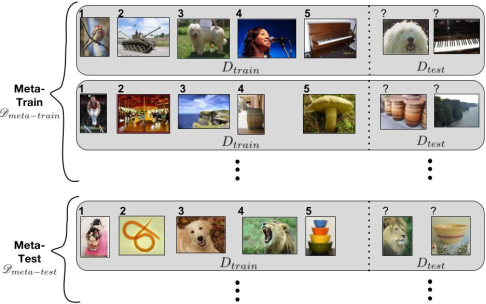
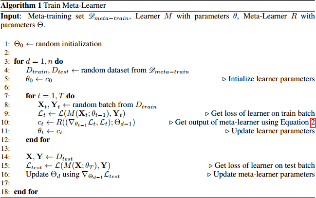
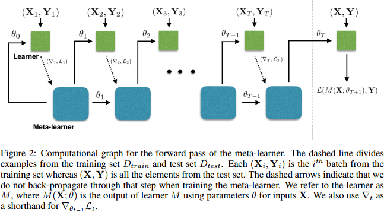

Meta-Learner LSTM
(ICLR 2017) Optimization As a Model For Few-Shot Learning
Paper: https://openreview.net/pdf?id=rJY0-Kcll
Code: https://github.com/twitter/meta-learning-lstm
提出一个基于LSTM的meta-learner学习另一个神经网络的参数，既学习优化参数规则，也学习权重初始化。
we propose an LSTM-based meta-learner model to learn the exact optimization algorithm used to train another learner neural network classifier in the few-shot regime.
learn appropriate parameter updates specifically for the scenario where a set amount of updates will be made
learn a general initialization of the learner (classifier) network that allows for quick convergence of training.
We demonstrate that this meta-learning model is competitive with deep metric-learning techniques for few-shot learning.
Introduction
problem: optimization of these deep, high-capacity models requires many iterative updates across many labeled examples.
The motivation for this task lies not only in the fact that humans, even children, can usually generalize after just one example of a given object, but also because models excelling at this task would have many useful applications.
alleviate data collection as we would not require millions of labeled examples to attain reasonable performance.
data exhibits the characteristic of having many different classes but few examples per class.
two main reasons why gradient-based optimization fails in the face of few labeled examples:
weren’t designed specifically to perform well under the constraint of a set number of updates.
for each separate dataset considered, the network would have to start from a random initialization of its parameters, which considerably hurts its ability to converge to a good solution after a few updates.
Meta-learning suggests framing the learning problem at two levels. The first is quick acquisition of knowledge within each separate task presented. This process is guided by the second, which involves slower extraction of information learned across all the tasks.
Task Description
We consider the \(k\)-shot, \(N\)-class classification task, where for each dataset \(D\), the training set consists of \(k\) labelled examples for each of \(N\) classes, meaning that \(D_{train}\) consists of \(k \cdot N\) examples, and \(D_{test}\) has a set number of examples for evaluation.
In meta-learning, however, we are dealing with meta-sets \(\mathscr{D}\) containing multiple regular datasets, where each \(D \in \mathscr{D}\) has a split of \(D_{train}\) and \(D_{test}\).
the term episode to describe each dataset consisting of a training and test set.

Model
Model Description
The standard optimization algorithms used to train deep neural networks with parameters \(\theta\) are some variant of gradient descent, which uses updates of the form:
\(\theta_t = \theta_{t - 1} - \alpha_t \nabla_{\theta_{t - 1}} \mathcal{L}_t\)
\(\alpha_t\): learning rate, \(\mathcal{L}_t\): loss, \(\nabla_{\theta_{t - 1}}\): gradient
this update resembles the update for the cell state in an LSTM:
\(c_t = f_t \odot c_{t - 1} + i_t \odot \tilde{c}_t\)
if \(f_t = 1\), \(c_{t - 1} = \theta_{t - 1}\), \(i_t = \alpha_t\), \(\tilde{c}_t = \nabla_{\theta_{t - 1}}\mathcal{L}_t\)
Thus, we propose training a meta-learner LSTM to learn an update rule for training a neural network.
\(i_t = \sigma (W_I \cdot [\nabla_{\theta_{t - 1}}\mathcal{L}_t, \mathcal{L}_t, \theta_{t - 1}, i_{t - 1}] + b_I)\)
the learning rate is a function of the current parameter value \(\theta_{t − 1}\), the current gradient \(\nabla_{\theta_{t - 1}}\), the current loss Lt, and the previous learning rate it−1.
the meta-learner should be able to finely control the learning rate so as to train the learner quickly while avoiding divergence.
\(f_t = \sigma (W_F \cdot [\nabla_{\theta_{t - 1}}\mathcal{L}_t, \mathcal{L}_t, \theta_{t - 1}, f_{t - 1}] + b_F)\)
shrinking the parameters of the learner and forgetting part of its previous value: if the learner is currently in a bad local optima and needs a large change to escape. (the loss is high but the gradient is close to zero.)
corresponds to the initial weights: learn the initial value of the cell state \(c_0\) for the LSTM, treating it as a parameter of the meta-learner.
Parameter Sharing & Preprocessing
to prevent an explosion of meta-learner parameters we need to employ some sort of parameter sharing.
as in Andrychowicz et al. (2016), we share parameters across the coordinates of the learner gradient. This means each coordinate has its own hidden and cell state values but the LSTM parameters are the same across all coordinates.
the preprocessing method of Andrychowicz et al. (2016) worked well when applied to both the dimensions of the gradients and the losses at each time step
Training
a good meta-learner model will, given a series of learner gradients and losses on the training set \(D_{train}\), suggest a series of updates for the classifier that pushes it towards good performance on the test set \(D_{test}\).


Gradient Independence Assumption
Initialization of Meta-learner LSTM
Batch Normalization
Related Work
Meta-learning
The ability to learn at two levels (learning within each task presented, while accumulating knowledge about the similarities and differences between tasks) is seen as being crucial to improving AI.
The work of Andrychowicz et al. (2016) uses an LSTM to train a neural network; however, they are interested in learning a general optimization algorithm to train neural networks for large-scale classification, whereas we are interested in the few-shot learning problem.
Few-shot Learning
The best performing methods for few-shot learning have been mainly metric learning methods.
Evaluation
Experiment Results
The Mini-ImageNet dataset was proposed by Vinyals et al. (2016) as a benchmark offering the challenges of the complexity of ImageNet images, without requiring the resources and infrastructure necessary to run on the full ImageNet dataset.
we create our own version of the Mini-Imagenet dataset by selecting a random 100 classes from ImageNet and picking 600 examples of each class. We use 64, 16, and 20 classes for training, validation and testing, respectively.
We consider 1-shot and 5-shot classification for 5 classes. We use 15 examples per class for evaluation in each test set.
Baseline-nearest-neighbor
train a network to classify between all the classes jointly in the original meta-training set.
At meta-test time, for each dataset \(D\), we embed all the items in the training set using our trained network and then use nearest-neighbor matching among the embedded training examples to classify each test example.
Baseline-finetune
a coarser version of our meta-learner model.
Matching Networks
we implemented our own version of both the basic and the fully-conditional embedding (FCE) versions.
basic: a convolutional network is trained to learn independent embeddings for examples in the training and test set.
FCE: a bidirectional-LSTM is used to learn an embedding for the training set such that each training example’s embedding is also a function of all the other training examples.
| Model | 1-shot | 5-shot |
|---|---|---|
| Baseline-finetune | 28.86 ± 0.54% | 49.79 ± 0.79% |
| Baseline-nearest-neighbor | 41.08 ± 0.70% | 51.04 ± 0.65% |
| Matching Network | 43.40 ± 0.78% | 51.09 ± 0.71% |
| Matching Network FCE | 43.56 ± 0.84% | 55.31 ± 0.73% |
| Meta-Learner LSTM (OURS) | 43.44 ± 0.77% | 60.60 ± 0.71% |
Table 1: Average classification accuracies on Mini-ImageNet with 95% confidence intervals. Marked in bold are the best results for each scenario, as well as other results with an overlapping confidence interval.
Visualization Of Meta-learner
Conclusion
We described an LSTM-based model for meta-learning, which is inspired from the parameter updates suggested by gradient descent optimization algorithms. Our LSTM meta-learner uses its state to represent the learning updates of the parameters of a classifier. It is trained to discover both a good initialization for the learner’s parameters, as well as a successful mechanism for updating the learner’s parameters to a given small training set for some new classification task. Our experiments demonstrate that our approach outperforms natural baselines and is competitive to the state-of-theart in metric learning for few-shot learning.
In this work, we focused our study to the few-shot and few-classes setting. However, it would be more valuable to train meta-learners that can perform well across a full spectrum of settings, i.e. for few or lots of training examples and for few or lots of possible classes. Our future work will thus consider moving towards this more challenging scenario.